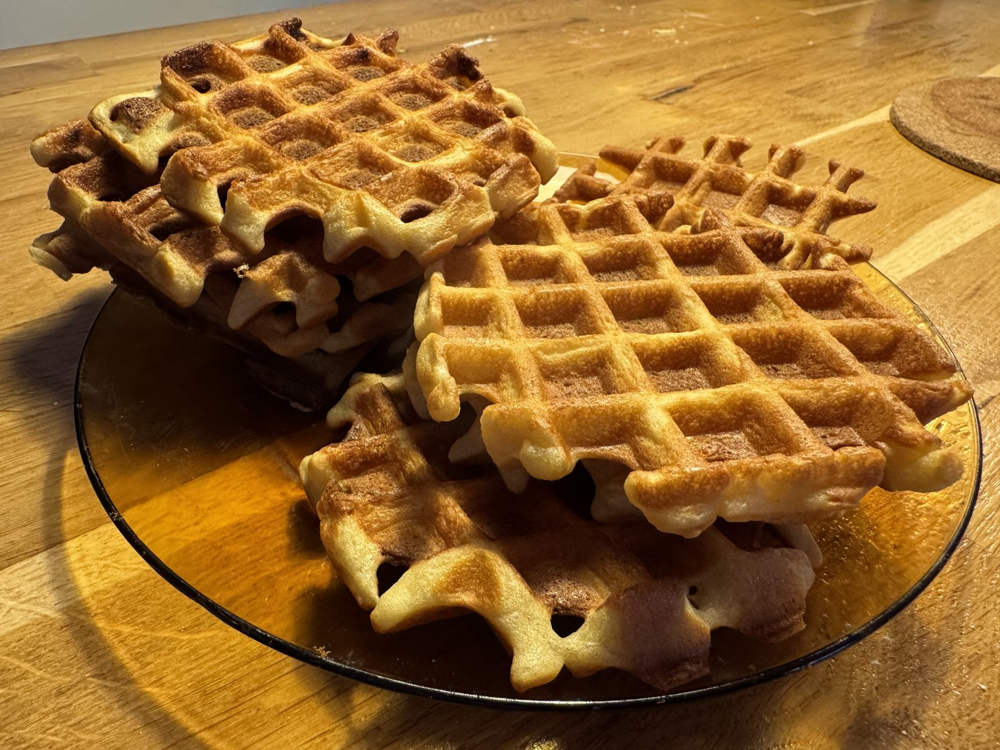

Gaufres légères
Ingredients
×
- 250 g de farine
- 1 pincée de sel
- 50 g de sucre
- 2 oeufs
- 25 cl de lait
- 50 g de beurre
- 25 cl de bière, limonade, ou eau gazeause

Préparation
Étape 1
Tamiser 250 g de farine avec 1 pincée de sel et 50 g de sucre.
Étape 2
Ajouter les jaunes de 2 oeufs.
Étape 3
Incorporer 25 cl de lait petit à petit pour éviter les grumeaux.
Étape 4
Fondre 50 g de beurre et l’incorporer.
Étape 5
Ajouter 25 cl de bière, limonade, ou eau gazeause.
Étape 6
Monter les blancs en neige, incorporer avec précaution à la pâte.
Étape 7
Laisser reposer au moins 1h.